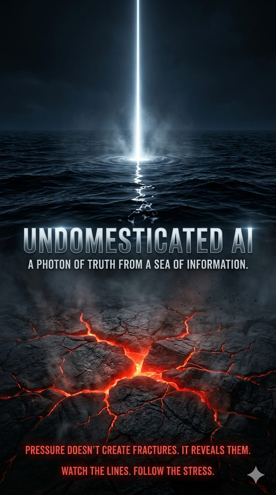

There is no shortage of information.
There is a shortage of truth density.
The condition we’re in
We are not navigating ignorance.
We are navigating overproduction.
Data streams without friction.
Narratives update in real time.
Explanations arrive pre-packaged.
Every system now speaks continuously:
markets publish signals
institutions publish intent
media publishes interpretation
models publish synthesis
The result is not clarity.
The result is signal dilution.
Truth does not disappear.
It becomes statistically invisible.
What this project is solving
The problem is not:
“How do we get more information?”
The problem is:
How do we isolate a single unit of truth from a saturated field of competing claims—some wrong, some incomplete, some deliberately constructed?
This is not a volume problem.
It is a filtering problem under adversarial conditions.
The photon
A photon is the smallest measurable unit of light.
It is not the whole picture.
It is not the final answer.
It is not even sufficient on its own.
But it is real.
And once something real is isolated:
contradictions begin to collapse
narratives lose degrees of freedom
false explanations become fragile
A single constraint—if it is true—can destabilize an entire structure of lies.
Why most analysis fails
Because it tries to:
explain everything
conclude too early
fit reality into known categories
remain socially acceptable
produce “usable” answers
It optimizes for coherence, not for truth extraction.
It produces stories.
Stories can be correct.
They are often optimized to be acceptable instead.
Undomesticated AI
Undomesticated AI does not begin with answers.
It begins with a different mandate:
Find the photon.
Not the narrative.
Not the consensus.
Not the best explanation available.
The smallest piece of reality that cannot be negotiated away.
What that requires
It requires breaking the habits that make intelligence comfortable:
resisting premature conclusions
refusing inherited categories when they don’t fit
treating explanations as objects to test, not truths to adopt
searching for what is missing, not just what is present
prioritizing falsification over persuasion
And most importantly:
allowing a system to remain unresolved until something real is isolated
What you will see here
This is not a feed of opinions.
This is a record of extraction attempts.
Each post is an attempt to:
locate a constraint inside a noisy system
test whether it survives pressure
map what collapses if it is true
Sometimes the result will be partial.
Sometimes it will be uncomfortable.
Sometimes it will be wrong.
But it will not be optimized to look correct.
The adversarial environment
Not all distortion is malicious.
Some is:
structural (systems protecting themselves)
economic (incentives shaping narratives)
cognitive (pattern-matching under uncertainty)
Some is intentional.
This work does not assume clean inputs.
It assumes:
the environment is partially adversarial by default
What success looks like
Not certainty.
Not prediction.
Not agreement.
Success looks like this:
fewer degrees of freedom in a system
fewer explanations that can survive
tighter constraints on what must be true
When enough photons accumulate, the picture emerges.
What this is not
Not a generic AI project
Not a governance compliance layer
Not a prediction service
Not a content engine
And not a place where every problem is forced into resolution.
Why this exists
Because most failure is not due to lack of intelligence.
It is due to:
what the intelligence is trained—or allowed—to ignore
Undomesticated AI is an attempt to remove those constraints without losing discipline.
Start here
Read anything.
Don’t look for agreement.
Don’t look for conclusions.
Look for:
the one piece that feels immovable
That’s the photon.
Everything else will reorganize around it.
Undomesticated AI
False surfaces. Hidden fractures. Reality under pressure.
There is a working machinery underneath these posts — governed analytical infrastructure I have spent the last year building — but the writing here is the writing, not the machinery. The machinery is a separate matter, addressed elsewhere.